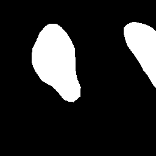
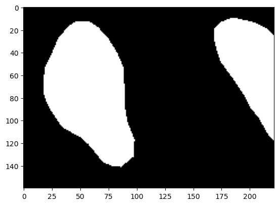

bbox_test = train_dataset['label'][3]Dataset preparation from HF
Data will be downloaded from hugging face and then will be processed to get the data in the format we want.
bbox_test
get_bounding_box
get_bounding_box (ground_truth_map:numpy.ndarray)
Get bounding box coordinates from mask image
| Type | Details | |
|---|---|---|
| ground_truth_map | ndarray | mask image type cv2 |
tesing get_bounding_box
bbox = get_bounding_box(np.array(bbox_test))
plt.imshow(np.array(bbox_test)[bbox[1]:bbox[3],bbox[0]:bbox[2]]);
SAMDataset
SAMDataset (dataset, processors)
Creating dataset for SAM Training
| Details | |
|---|---|
| dataset | pytorch dataset |
| processors | hf model processor |
Creating pytorch dataset
train_ds = SAMDataset(
dataset=train_dataset,
processors=processor)testing shape whether pytorch dataset is created correctly
example = train_ds[0]
for k,v in example.items():
print(k, v.shape)pixel_values torch.Size([3, 1024, 1024])
original_sizes torch.Size([2])
reshaped_input_sizes torch.Size([2])
input_boxes torch.Size([1, 4])
ground_truth_mask (256, 256)Creating pytorch pytorch dataloader
train_dataloader = DataLoader(
train_ds,
batch_size=2,
shuffle=True)testing pytorch dataloader
batch = next(iter(train_dataloader))
for k,v in batch.items():
print(k,v.shape)pixel_values torch.Size([2, 3, 1024, 1024])
original_sizes torch.Size([2, 2])
reshaped_input_sizes torch.Size([2, 2])
input_boxes torch.Size([2, 1, 4])
ground_truth_mask torch.Size([2, 256, 256])loading Model
model = SamModel.from_pretrained('facebook/sam-vit-base')# make sure we only compute gradients for mask decoder
for name, param in model.named_parameters():
if name.startswith("vision_encoder") or name.startswith("prompt_encoder"):
param.requires_grad_(False)optimizer = torch.optim.AdamW(model.parameters(), lr=0.001, weight_decay=0.0001)NUM_EPOCHS = 2
T_0 = int(0.5 * NUM_EPOCHS)
ITERS = len(train_dataloader)optimizer = AdamW(
model.mask_decoder.parameters(),
lr=0.001,
weight_decay=0.0001)
seg_loss = monai.losses.DiceCELoss(
sigmoid=True,
squared_pred=True,
reduction='mean')device = "cuda" if torch.cuda.is_available() else "cpu"
# in case of very small gpu memory, like me then use cpu
#device = "cpu"
model.to(device)
scheduler = CosineAnnealingWarmRestarts(
T_0=T_0,
optimizer=optimizer,
eta_min=0.00001)device'cpu'model.train()
for epoch in range(NUM_EPOCHS):
epoch_losses = []
for i, batch in tqdm(enumerate(train_dataloader)):
# forward pass
outputs = model(pixel_values=batch["pixel_values"].to(device),
input_boxes=batch["input_boxes"].to(device),
multimask_output=False)
# compute loss
predicted_masks = outputs.pred_masks.squeeze(1)
ground_truth_masks = batch["ground_truth_mask"].float().to(device)
loss = seg_loss(predicted_masks, ground_truth_masks.unsqueeze(1))
# backward pass (compute gradients of parameters w.r.t. loss)
optimizer.zero_grad()
loss.backward()
# optimize
optimizer.step()
epoch_losses.append(loss.item())
scheduler.step(epoch + i / ITERS)
print(f'EPOCH: {epoch}')
print(f'Mean loss: {mean(epoch_losses)}')